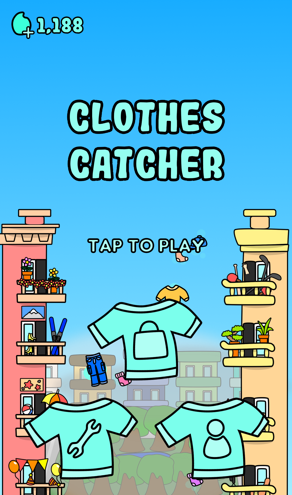

Creating commercial mobile games
Overview
I had been a Junior Unity Game Developer since I relocated to Toronto. In my previous workplace, games are designed and developed at very fast-paced work cycles. Specifically, the process from generating game ideas and drawing 2D art assets, to programming and publishing work had to be completed in 8 days. However, with the help of a maturing code base to speed up development, adjusting to the tight schedule was a tough but rewarding experience. It also boosted my overall productivity and efficiency in various tasks in life.
Key Responsibilities
- Generating and pitching feasible and entertaining game ideas
- Designing 2D art assets suitable for the games, eg. UI, character sprites, background image, interactable object sprites, particle effect sprites
- Implementing game loops with C# while adding polish and usability such as animations and particle effects
- Participating in code reviews and QA checks to ensure optimal performance and playability of the games
Screenshots
